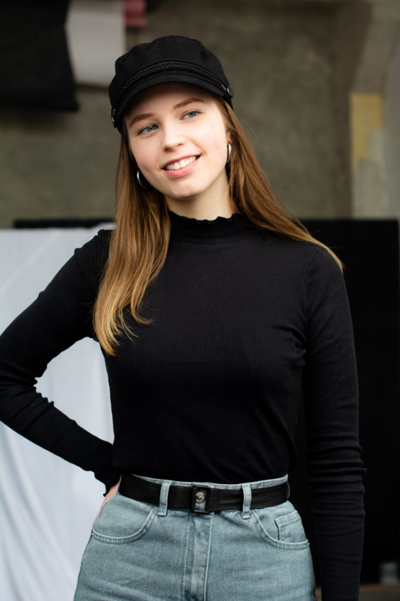
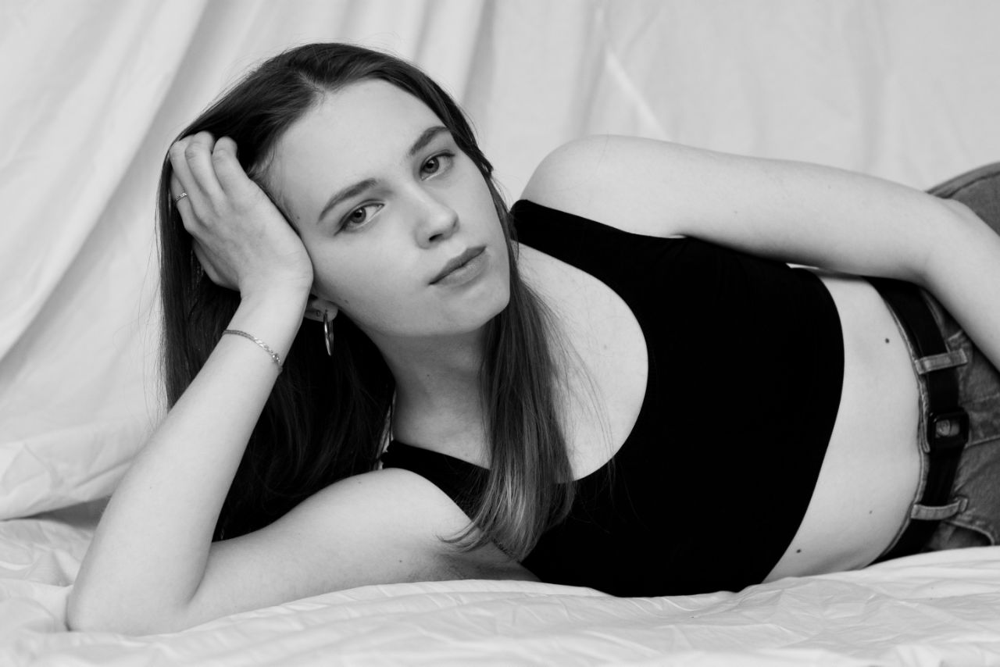
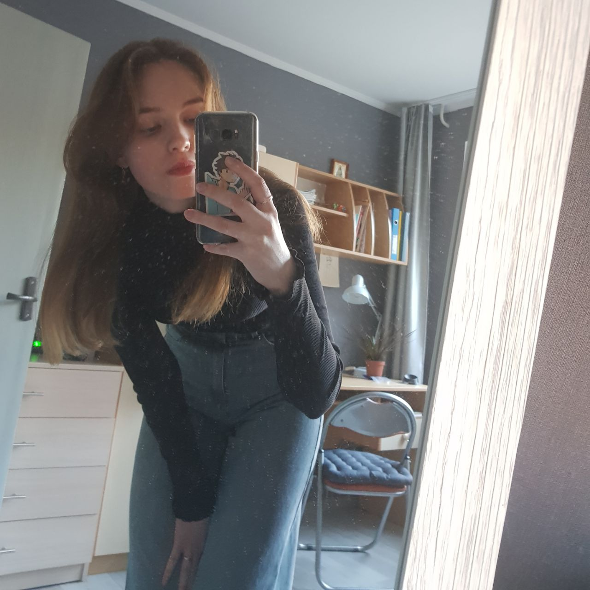
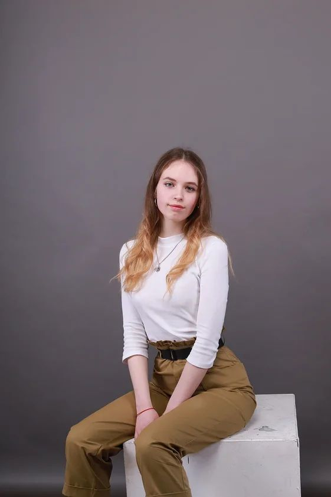
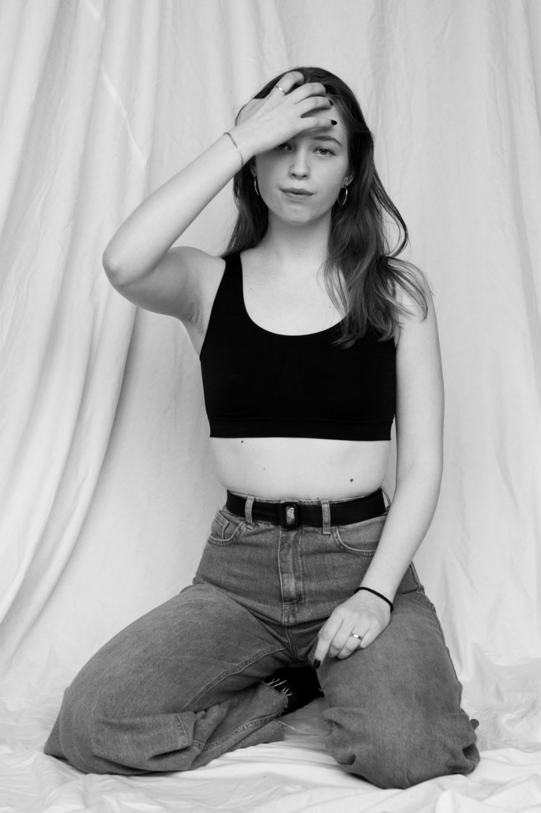

Родилась 5 января 2003 года в г. Светлогорск. До 10 класса училась в Гимназии 7 Светлогорска. Играла в сборной по волейболу с 6го класса, но в 10 классе получила травму и теперь ей нежелательно в него играть. Очень любит свою команду (до сих пор поддерживают связь).
Елизавета
Коченкова
Коченкова

В связи с определёнными обстоятельствами, переехала на два года (10 и 11) классы в Минск, училась тут в Гимназии 7. Не хватило терпения, так что она не закончила школу искусств на хореографическом отделении(1 год оставался из 7).
Из черт: слишком много думает, привыкла к одиночеству, но если появляется в её жизни важный человек, то достаточно ревнивая, легко отпускает людей, если они хотят.


Любит голубой цвет, макароны, азиатскую кухню( часто пробует приготовить что-нибудь сама, ведь ради себя любимой нужно), обожает играть в игры или читать манги, слушать музыку. Не любит: морепродукты, ложь, курящих, нарушение моральных принципов.
Лиза очень красивая и привлекательная девушка. Крутая соседка по блоку, вместе завтракаем. Всегда поддержит и поможет в трудную минуту. Фоточки огонь. Лучшая подружка - Анечка. Всего тебе самого прекрасного и хорошего.


